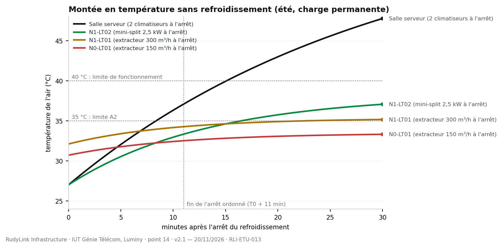

BET des locaux techniques
RLI-ETU-013 · v2.1 — 20/11/2026
RLI-ETU-013 · v2.1 — 20/11/2026
Site de Marseille · IUT Génie Télécom, Luminy · RudyLink Infrastructure · point 14 du cahier des charges · RLI-ETU-013 · v2.1 — 20/11/2026
Salle serveur, 6 locaux techniques, tableau informatique, TGBT et groupe électrogène : inventaire, chaleur, ventilation, circuits, secours. Note de calcul du BET fluides et courants forts.
energie_refroidissement.pdf (RLI-ETU-002), dont il reprend le bilan de puissance, enregistreur vidéo VS-NVR1 compris.python3 energie/energie.py).| Élément | Capacité | Charge actuelle | Marge | Besoin d'un nœud d'IA | Couvert |
|---|---|---|---|---|---|
| Onduleur seul, en pointe (critère 90 % de 6 kW) | 5,4 kW | 4,3 kW | 1,1 kW | 10,0 kW | NOK |
| Climatiseur seul (puissance sensible / 1,15) | 5,6 kW | 5,4 kW | 0,2 kW | 10,0 kW | NOK |
| Groupe électrogène (80 % de la PRP, en kVA) | 24,0 kVA | 16,5 kVA | 7,5 kVA | 14,3 kVA | NOK |
Groupe : le nœud d'IA et sa climatisation (EER d'été 2,8). La consommation et la dissipation déclarées par nœud dans les offres (exigence du CCTP lot 3) remplaceront cette estimation.
| Local | Niveau | Surface | Puissance élec. max. | Dissipé typ. | Pointe été | Refroidissement retenu | T été | Verdict |
|---|---|---|---|---|---|---|---|---|
| Salle serveur | N-1 | 25 m² | 11,4 kW | 4 004 W | 5 384 W | 2 climatiseurs 7,1 kW (N+1), allée froide | 27 °C | OK |
| N-1-LT01 L.TECH 01 | N-1 | 6,7 m² | 0,26 kW | 75 W | 246 W | grilles | 32,1 °C | OK |
| N-1-LT02 L.TECH 02 | N-1 | 16,0 m² | 0,22 kW | 73 W | 316 W | grilles | 33,6 °C | OK |
| N0-LT01 L.TECH | N0 | 2,3 m² | 0,59 kW | 146 W | 306 W | extracteur 150 m³/h | 33,1 °C | OK |
| N0-LT02 L.TECH 02 | N0 | 6,9 m² | 0,81 kW | 263 W | 484 W | extracteur 300 m³/h v2.1 | 31,8 °C | Corrigé v2.1 |
| N1-LT01 L.TECH 01 | N1 | 3,7 m² | 0,46 kW | 152 W | 337 W | extracteur 300 m³/h v2.1 | 33,4 °C | Corrigé v2.1 |
| N1-LT02 L.TECH 02 | N1 | 6,6 m² | 1,60 kW | 337 W | 597 W | mini-split 2,5 kW v2.1 | 27,0 °C | Corrigé v2.1 |
| TD-INFO + inverseur | N-1 | — | 16,5 kVA | 40 W | 40 W | dans la salle serveur (compté dans sa clim) | — | OK |
| Groupe électrogène v2.1 | extérieur | ≈ 6 m² | 30 kVA PRP | — | — | capot insonorisé, radiateur intégré (extérieur) | — | À vérifier |
| TGBT existant | N0 | 27 m² | +20 kVA | — | — | local électrique existant | — | À vérifier |
Puissance électrique maximale : tout au maximum (PoE à la classe, recharge des batteries, deux climatiseurs en marche après une coupure). Dissipé : chaleur restant dans le local (le PoE est dissipé chez les bornes et caméras). Pointe été : dissipé maximal + technicien + éclairage + toiture. T été : température de l'air du local avec l'air des circulations à 24 °C (sous-sol), 27 °C (RDC), 30 °C (étage sous toiture).
| Point | v2 (15/11/2026) | v2.1 (20/11/2026) | Pourquoi |
|---|---|---|---|
| Ventilation N0-LT02 | extracteur 150 m³/h : 36,6 °C en été | extracteur 300 m³/h : 31,8 °C | 484 W à évacuer avec de l'air à 27 °C : critère 35 °C (onduleur limité à 40 °C, batteries) |
| Ventilation N1-LT01 | extracteur 150 m³/h : 36,7 °C en été | extracteur 300 m³/h : 33,4 °C | 337 W à évacuer avec de l'air à 30 °C : critère 35 °C (onduleur limité à 40 °C, batteries) |
| Ventilation N1-LT02 | extracteur 150 m³/h : 41,9 °C en été | mini-split 2,5 kW : 27,0 °C | 597 W à évacuer avec de l'air à 30 °C : critère 35 °C (onduleur limité à 40 °C, batteries) |
| Pertes des onduleurs de la salle | rendement fixe 95 % | 307 W (≈ 92 % à 30 % de charge) | En 2N, chaque onduleur tourne au tiers de sa puissance, où son rendement est plus faible |
| Auxiliaires de la salle | non comptés | 105 W (VESDA, extinction, badge, sondes, tableau) | Chaleur et consommation réelles, comptées dans la clim et le PUE |
| Secours long | aucun : arrêt ordonné à T0 + 5 min | GE 33 kVA ESP + inverseur automatique ; arrêt ordonné seulement si le GE n'a pas repris à T0 + 3 min | Le client confirme qu'il n'y a pas de GE sur le site |
| Protections différentielles | « protections différentielles » | type B (onduleurs en ligne), F (clim, ventilateurs), A SI (onduleurs des L.TECH), coffret par L.TECH | Redresseurs PFC et variateurs : fuites HF et composante continue |
| Batteries des onduleurs des L.TECH | remplacement tous les 5 ans | tous les 4 ans | Locaux à 28-33 °C l'été : la durée de vie d'une batterie plomb est divisée par 2 tous les +10 K au-dessus de 20-25 °C |
| Paramètre | Valeur | Justification |
|---|---|---|
| Consigne de la salle serveur | 27 °C à l'entrée des équipements | ASHRAE A1 recommandé 18-27 °C ; alarme 30 °C, arrêt ordonné 35 °C (limite A2), limite des onduleurs et de la plupart des équipements 40 °C |
| Air des circulations en été | N-1 24 °C · N0 27 °C · N1 30 °C ; canicule +4 K | Bâtiment non climatisé à Marseille ; sous-sol enterré frais ; étage sous toiture-terrasse plus chaud. Air repris par les grilles ou l'extracteur |
| Critère des locaux techniques | ≤ 35 °C en été, ≤ 40 °C en canicule | Onduleur SMT : 0-40 °C ; switch C9200L : jusqu'à 45 °C ; batteries : vieillissement accéléré au-delà de 25 °C |
| Apports par les parois | 10 W/m² sous toiture (N1), 0 ailleurs | Toiture-terrasse isolée (U ≈ 0,4) et écart soleil-air ≈ 25 K ; locaux intérieurs entourés de circulations à température voisine ; sous-sol : pertes vers le sol négligées |
| Éclairage, occupant | 8 W/m² LED ; 100 W sensibles | Ponctuels (intervention) : comptés dans la pointe, pas dans le régime permanent |
| Puissance des équipements | fiches constructeur (typique / maximale) | Pointe réaliste de la salle : 80 % de la somme des maxima ; switch des L.TECH 55 W typ. / 65 W max. hors PoE |
| PoE | typique : Wi-Fi 13 W, caméra 6 W, badge 4 W, téléphone 4 W ; max. : classe réservée | La puissance PoE est dissipée chez l'appareil ; seules les pertes de conversion du switch (rendement 90 %) chauffent le local |
| Pertes des onduleurs | SRT 6 kVA en ligne : 100 W + 3 % ; SMT 1500 line-interactive : 12 W + 2 % | Ordres de grandeur des courbes de rendement constructeur (92 % à 30 % de charge, 95 % à pleine charge pour le SRT) |
| Ventilation naturelle | 2 grilles 600 × 200 mm (section libre 50 %), 1,8 m d'écart, Cd 0,6 | Tirage thermique entre la grille basse (porte) et la grille haute (imposte) |
| Inertie en panne de refroidissement | air + 30 % de la masse des baies (450 J/kg·K), cloisons U = 1,5 W/m²·K | Borne pessimiste également donnée : air seul, parois adiabatiques, puissance de pointe |
| Climatiseurs de la salle | 7,1 kW, part sensible 90 %, 1200 m³/h, 2,7 kW absorbés max. | Climatiseur technique (salle sèche) ; kit basse température pour fonctionner l'hiver |
| Régime de neutre, TGBT | TN-S supposé ; TGBT au RDC (local PL.ELEC, 27 m²) | Bâtiment alimenté par un poste HTA/BT du campus : à confirmer avec les services techniques |
| Câbles | U1000 R2V sur chemin de câbles, méthode E, facteur 0,7 | NF C 15-100 / IEC 60364-5-52 ; ΔU ≤ 3 % par départ, ≤ 2 % pour les liaisons de distribution (total ≤ 5 %) |
| Groupe électrogène | diesel 400 V, gamme 20, 30, 40, 60 kVA PRP, 1,40 € HT/l | NF ISO 8528-1 (PRP : puissance continue à charge variable ; ESP : secours), prix et consommations : fiches et tarifs distributeurs, ordre de grandeur |
Inventaire. Tous les équipements sont dans la salle : 100 % de leur puissance devient chaleur dans la salle.
| Repère | Équipement | Qté | Absorbé typ. | Absorbé max. | Dissipé typ. | Dissipé max. | BTU/h max. | Remarque |
|---|---|---|---|---|---|---|---|---|
| EL-RTR1, EL-RTR2 | Cisco C8200L-1N-4T | 2 | 40 W | 60 W | 40 W | 60 W | 205 | |
| EL-FGT1, EL-FGT2 | FortiGate 120G | 2 | 80 W | 130 W | 80 W | 130 W | 444 | |
| EL-SW1, EL-SW2 | Cisco C9200L-24T-4X | 2 | 80 W | 120 W | 80 W | 120 W | 409 | |
| EL-SNS1, EL-SNS2 | Stormshield SN710 | 2 | 90 W | 140 W | 90 W | 140 W | 478 | |
| DM-SW1, DM-SW2 | Cisco C9200L-24T-4X | 2 | 80 W | 120 W | 80 W | 120 W | 409 | |
| CL-SW1, CL-SW2 | Cisco C9500-16X | 2 | 320 W | 520 W | 320 W | 520 W | 1 774 | |
| DL-SW1 à DL-SW4 | Cisco C9500-16X | 4 | 640 W | 1 040 W | 640 W | 1 040 W | 3 548 | |
| NM-SW1, NM-SW2 | Cisco C9200L-24T-4X | 2 | 80 W | 120 W | 80 W | 120 W | 409 | |
| WLC1, WLC2 | Cisco Catalyst 9800-L-F | 2 | 110 W | 180 W | 110 W | 180 W | 614 | |
| Tiroirs optiques | Rocades et adductions | 3 | 0 W | 0 W | 0 W | 0 W | 0 | passifs |
| DM-PVE1, DM-PVE2 (VM de la DMZ) | Dell PowerEdge R360 | 2 | 240 W | 400 W | 240 W | 400 W | 1 365 | |
| NM-WITNESS, DM-WITNESS | Dell PowerEdge R260 (entrée de gamme) | 2 | 120 W | 220 W | 120 W | 220 W | 751 | |
| DT-SW1, DT-SW2 | Cisco C9300X-12Y | 2 | 260 W | 440 W | 260 W | 440 W | 1 501 | |
| DT-PVE1, DT-PVE2 (VM AD, NPS, DHCP) | Dell PowerEdge R660xs | 2 | 480 W | 800 W | 480 W | 800 W | 2 730 | |
| NM-PVE1, NM-PVE2 | Dell PowerEdge R660xs | 2 | 520 W | 840 W | 520 W | 840 W | 2 866 | |
| DT-BKP1 | Dell PowerEdge R760xd2 | 1 | 320 W | 480 W | 320 W | 480 W | 1 638 | |
| VS-NVR1 (lot sûreté) | Enregistreur vidéo 2U, 8 × 8 To RAID 6 | 1 | 80 W | 150 W | 80 W | 150 W | 512 | |
| PDU-1A, PDU-1B | PDU métrée et managée 16 A (électronique) | 2 | 16 W | 20 W | 16 W | 20 W | 68 | |
| PDU-2A, PDU-2B | PDU métrée et managée 16 A (électronique) | 2 | 16 W | 20 W | 16 W | 20 W | 68 | |
| OND-A, OND-B | APC SRT 6 kVA en ligne double conversion : pertes | 2 | 307 W | 339 W | 307 W | 339 W | 1 157 | 100 W + 3 % chacun ; 92 % à 30 % de charge |
| TD | Tableau TD-INFO et inverseur de source : pertes | 1 | 40 W | 40 W | 40 W | 40 W | 136 | ≈ 2 W par départ chargé + électronique |
| VESDA | Détection précoce par aspiration (VESDA) | 1 | 30 W | 30 W | 30 W | 30 W | 102 | |
| EXT | Centrale d'extinction IG-541 et déclencheurs | 1 | 15 W | 15 W | 15 W | 15 W | 51 | |
| ACC | Lecteur de badge B1 et gâche de la porte | 1 | 10 W | 10 W | 10 W | 10 W | 34 | |
| SON | Sondes T/H et centrale de détection de fuite | 1 | 10 W | 10 W | 10 W | 10 W | 34 | |
| ECL | Éclairage LED 8 W/m² | 1 | 20 W | 200 W | 20 W | 200 W | 682 | allumé 10 % du temps |
| OCC | Technicien en intervention | 1 | 0 W | 100 W | 0 W | 100 W | 341 | ponctuel |
| PAR | Apports par les parois | 1 | 0 W | 0 W | 0 W | 0 W | 0 | sous-sol enterré : pertes vers le sol négligées |
| Total dissipé dans le local (typique · pointe été avec intervention) | 4 004 W | 6 544 W | 22 329 | |||||
| Pointe réaliste retenue pour la climatisation (informatique à 80 % des maxima, tout le reste au maximum) | 5 384 W | 18 371 | ||||||
Bilan thermique.
| Grandeur | Valeur | Commentaire |
|---|---|---|
| Charge typique · pointe | 4,00 · 5,38 kW | 13 662 · 18 371 BTU/h |
| Puissance sensible d'un climatiseur | 6,4 kW | une unité porte la pointe à 84 % ; l'autre est en secours (N+1), alternance hebdomadaire |
| Débit d'air d'une unité · besoin des équipements | 1200 · 889 m³/h | besoin pour ΔT = 12 K à travers les serveurs ; écart soufflage-reprise 13,4 K en pointe |
| Régime établi | 27 °C | allée froide confinée ; reprise chaude ≈ 39 °C |
| Panne des 2 climatiseurs : 35 °C · 40 °C | 8,4 min · 15 min | air 60 m³ + 30 % de 954 kg de baies et d'équipements ; borne pessimiste (air seul) : 1,8 min · 2,9 min |
| Coupure secteur avec GE : 4 min sans froid | 31,1 °C | borne pessimiste 44,9 °C ; les climatiseurs ne sont pas ondulés (inutile) |
| Coupure sans GE : à la fin de l'arrêt ordonné | 37,1 °C | T0 + 11 min ; seuls les switchs et pare-feu restent ensuite en marche |
Bilan électrique. Deux onduleurs en ligne, deux voies A/B, deux climatiseurs, éclairage, prises et auxiliaires : 7 départs du TD-INFO.
| Grandeur | Valeur | Seuil |
|---|---|---|
| Charge d'un onduleur, marche normale | 1 786 W · 30 % | ≤ 80 % |
| Charge d'un onduleur seul, en pointe | 4 328 W · 72 % | ≤ 90 % |
| Autonomie : 2 onduleurs · 1 onduleur · 1 onduleur en fin de vie | 81 · 32 · 26 min | ≥ 14 min |
| Entrée d'un onduleur (IB nominal · réel) | 29,3 · 21,8 A | départ 32 A C, 4,0 mm², 300 mA type B sélectif |
| Climatiseur (×2) | 2,7 kW · 12,4 A | départ 20 A C, 2,5 mm², 30 mA type F |
| Puissance de la salle (pointe, recharge, 2 clims) | 11,4 kW | cos φ ≈ 0,97 |
Inventaire. 1 switch PoE+, onduleur 1,5 kVA ; appareils PoE desservis en gris (leur chaleur n'est pas dans le local).
| Repère | Équipement | Qté | Absorbé typ. | Absorbé max. | Dissipé typ. | Dissipé max. | BTU/h max. | Remarque |
|---|---|---|---|---|---|---|---|---|
| SW1 | Cisco C9200L-48P-4X : électronique et ventilateurs (hors PoE) | 1 | 55 W | 65 W | 55 W | 65 W | 222 | |
| PoE | PoE envoyé sur les câbles (alimentation + PSE, rendement 90 %) | 1 | 58 W | 114 W | 6 W | 11 W | 39 | seules les pertes restent dans le local |
| WIF | Borne Wi-Fi 6E Cisco CW9164I | 2 | 26 W | 51 W | 0 W | 0 W | 0 | chaleur chez l'appareil ; énergie comptée dans la ligne PoE |
| CAM | Caméra IP (PoE 802.3af) | 3 | 18 W | 39 W | 0 W | 0 W | 0 | chaleur chez l'appareil ; énergie comptée dans la ligne PoE |
| BAD | Lecteur de badge PoE | 2 | 8 W | 13 W | 0 W | 0 W | 0 | chaleur chez l'appareil ; énergie comptée dans la ligne PoE |
| OND | APC Smart-UPS SMT 1500 RM 2U (line-interactive) : pertes | 1 | 14 W | 16 W | 14 W | 16 W | 53 | ≈ 12 W + 2 % de la charge |
| PB | Panneaux de brassage, tiroir optique, passe-câbles | 2 | 0 W | 0 W | 0 W | 0 W | 0 | passifs |
| ECL | Éclairage LED (allumé pendant les interventions) | 1 | 0 W | 54 W | 0 W | 54 W | 183 | ponctuel |
| OCC | Technicien en intervention (chaleur sensible) | 1 | 0 W | 100 W | 0 W | 100 W | 341 | ponctuel |
| Total dissipé dans le local (typique · pointe été avec intervention) | 75 W | 246 W | 838 | |||||
Bilan thermique.
| Dissipé typique · permanent max. | 75 · 92 W |
| Pointe été (intervention) | 246 W · 838 BTU/h |
| Air des circulations (été) | 24 °C |
| Grilles seules | 32,1 °C |
| Solution v2 · v2.1 | grilles · grilles |
| Température été · canicule | 32,1 · 36,2 °C |
| Débit pour ΔT = 10 K (typique) | 22 m³/h |
| Sans ventilation : 35 °C · 40 °C | jamais · jamais |
| Température limite sans ventilation | 25,7 °C |
Bilan électrique.
| Charge onduleur typ. · max. | 113 · 179 W |
| Taux de charge (1 000 W) · autonomie | 18 % · 157 min |
| Puissance du départ (max.) | 0,26 kW · 0,27 kVA |
| Courant réel · IB (+25 %) | 1,2 · 1,5 A |
| Départ TD-INFO | 20 A C, L1, 300 mA A-S |
| Câble (19 m) · ΔU | 2,5 mm² · 0,2 % |
| Coffret du local | 10 A 30 mA A SI |
| Fuite permanente sur le 30 mA | ≈ 3 mA (≤ 9) |
Inventaire. 1 switch PoE+, onduleur 1,5 kVA ; appareils PoE desservis en gris (leur chaleur n'est pas dans le local).
| Repère | Équipement | Qté | Absorbé typ. | Absorbé max. | Dissipé typ. | Dissipé max. | BTU/h max. | Remarque |
|---|---|---|---|---|---|---|---|---|
| SW1 | Cisco C9200L-48P-4X : électronique et ventilateurs (hors PoE) | 1 | 55 W | 65 W | 55 W | 65 W | 222 | |
| PoE | PoE envoyé sur les câbles (alimentation + PSE, rendement 90 %) | 1 | 40 W | 78 W | 4 W | 8 W | 27 | seules les pertes restent dans le local |
| WIF | Borne Wi-Fi 6E Cisco CW9164I | 2 | 26 W | 51 W | 0 W | 0 W | 0 | chaleur chez l'appareil ; énergie comptée dans la ligne PoE |
| CAM | Caméra IP (PoE 802.3af) | 1 | 6 W | 13 W | 0 W | 0 W | 0 | chaleur chez l'appareil ; énergie comptée dans la ligne PoE |
| BAD | Lecteur de badge PoE | 1 | 4 W | 6 W | 0 W | 0 W | 0 | chaleur chez l'appareil ; énergie comptée dans la ligne PoE |
| OND | APC Smart-UPS SMT 1500 RM 2U (line-interactive) : pertes | 1 | 14 W | 15 W | 14 W | 15 W | 51 | ≈ 12 W + 2 % de la charge |
| PB | Panneaux de brassage, tiroir optique, passe-câbles | 2 | 0 W | 0 W | 0 W | 0 W | 0 | passifs |
| ECL | Éclairage LED (allumé pendant les interventions) | 1 | 0 W | 128 W | 0 W | 128 W | 437 | ponctuel |
| OCC | Technicien en intervention (chaleur sensible) | 1 | 0 W | 100 W | 0 W | 100 W | 341 | ponctuel |
| Total dissipé dans le local (typique · pointe été avec intervention) | 73 W | 316 W | 1 077 | |||||
Bilan thermique.
| Dissipé typique · permanent max. | 73 · 88 W |
| Pointe été (intervention) | 316 W · 1 077 BTU/h |
| Air des circulations (été) | 24 °C |
| Grilles seules | 33,6 °C |
| Solution v2 · v2.1 | grilles · grilles |
| Température été · canicule | 33,6 · 37,7 °C |
| Débit pour ΔT = 10 K (typique) | 22 m³/h |
| Sans ventilation : 35 °C · 40 °C | jamais · jamais |
| Température limite sans ventilation | 25,0 °C |
Bilan électrique.
| Charge onduleur typ. · max. | 95 · 143 W |
| Taux de charge (1 000 W) · autonomie | 14 % · 243 min |
| Puissance du départ (max.) | 0,22 kW · 0,23 kVA |
| Courant réel · IB (+25 %) | 1,0 · 1,2 A |
| Départ TD-INFO | 20 A C, L2, 300 mA A-S |
| Câble (56 m) · ΔU | 2,5 mm² · 0,5 % |
| Coffret du local | 10 A 30 mA A SI |
| Fuite permanente sur le 30 mA | ≈ 3 mA (≤ 9) |
Inventaire. 2 switchs PoE+, onduleur 1,5 kVA ; appareils PoE desservis en gris (leur chaleur n'est pas dans le local).
| Repère | Équipement | Qté | Absorbé typ. | Absorbé max. | Dissipé typ. | Dissipé max. | BTU/h max. | Remarque |
|---|---|---|---|---|---|---|---|---|
| SW1…SW2 | Cisco C9200L-48P-4X : électronique et ventilateurs (hors PoE) | 2 | 110 W | 130 W | 110 W | 130 W | 444 | |
| PoE | PoE envoyé sur les câbles (alimentation + PSE, rendement 90 %) | 1 | 184 W | 356 W | 18 W | 36 W | 121 | seules les pertes restent dans le local |
| WIF | Borne Wi-Fi 6E Cisco CW9164I | 10 | 130 W | 255 W | 0 W | 0 W | 0 | chaleur chez l'appareil ; énergie comptée dans la ligne PoE |
| CAM | Caméra IP (PoE 802.3af) | 2 | 12 W | 26 W | 0 W | 0 W | 0 | chaleur chez l'appareil ; énergie comptée dans la ligne PoE |
| BAD | Lecteur de badge PoE | 2 | 8 W | 13 W | 0 W | 0 W | 0 | chaleur chez l'appareil ; énergie comptée dans la ligne PoE |
| TEL | Téléphone IP PoE | 4 | 16 W | 26 W | 0 W | 0 W | 0 | chaleur chez l'appareil ; énergie comptée dans la ligne PoE |
| OND | APC Smart-UPS SMT 1500 RM 2U (line-interactive) : pertes | 1 | 18 W | 22 W | 18 W | 22 W | 74 | ≈ 12 W + 2 % de la charge |
| PB | Panneaux de brassage, tiroir optique, passe-câbles | 4 | 0 W | 0 W | 0 W | 0 W | 0 | passifs |
| ECL | Éclairage LED (allumé pendant les interventions) | 1 | 0 W | 18 W | 0 W | 18 W | 63 | ponctuel |
| OCC | Technicien en intervention (chaleur sensible) | 1 | 0 W | 100 W | 0 W | 100 W | 341 | ponctuel |
| Total dissipé dans le local (typique · pointe été avec intervention) | 146 W | 306 W | 1 043 | |||||
Bilan thermique.
| Dissipé typique · permanent max. | 146 · 187 W |
| Pointe été (intervention) | 306 W · 1 043 BTU/h |
| Air des circulations (été) | 27 °C |
| Grilles seules | 36,4 °C |
| Solution v2 · v2.1 | extracteur 150 m³/h · extracteur 150 m³/h |
| Température été · canicule | 33,1 · 37,1 °C |
| Débit pour ΔT = 10 K (typique) | 44 m³/h |
| Sans ventilation : 35 °C · 40 °C | jamais · jamais |
| Température limite sans ventilation | 33,4 °C |
Bilan électrique.
| Charge onduleur typ. · max. | 294 · 486 W |
| Taux de charge (1 000 W) · autonomie | 49 % · 23 min |
| Puissance du départ (max.) | 0,59 kW · 0,62 kVA |
| Courant réel · IB (+25 %) | 2,7 · 3,4 A |
| Départ TD-INFO | 20 A C, L1, 300 mA A-S |
| Câble (53 m) · ΔU | 2,5 mm² · 1,3 % |
| Coffret du local | 10 A 30 mA A SI + 10 A 30 mA F |
| Fuite permanente sur le 30 mA | ≈ 4 mA (≤ 9) |
Inventaire. 4 switchs PoE+, onduleur 1,5 kVA ; appareils PoE desservis en gris (leur chaleur n'est pas dans le local).
| Repère | Équipement | Qté | Absorbé typ. | Absorbé max. | Dissipé typ. | Dissipé max. | BTU/h max. | Remarque |
|---|---|---|---|---|---|---|---|---|
| SW1…SW4 | Cisco C9200L-48P-4X : électronique et ventilateurs (hors PoE) | 4 | 220 W | 260 W | 220 W | 260 W | 887 | |
| PoE | PoE envoyé sur les câbles (alimentation + PSE, rendement 90 %) | 1 | 224 W | 428 W | 22 W | 43 W | 146 | seules les pertes restent dans le local |
| WIF | Borne Wi-Fi 6E Cisco CW9164I | 10 | 130 W | 255 W | 0 W | 0 W | 0 | chaleur chez l'appareil ; énergie comptée dans la ligne PoE |
| CAM | Caméra IP (PoE 802.3af) | 4 | 24 W | 52 W | 0 W | 0 W | 0 | chaleur chez l'appareil ; énergie comptée dans la ligne PoE |
| BAD | Lecteur de badge PoE | 2 | 8 W | 13 W | 0 W | 0 W | 0 | chaleur chez l'appareil ; énergie comptée dans la ligne PoE |
| TEL | Téléphone IP PoE | 10 | 40 W | 65 W | 0 W | 0 W | 0 | chaleur chez l'appareil ; énergie comptée dans la ligne PoE |
| OND | APC Smart-UPS SMT 1500 RM 2U (line-interactive) : pertes | 1 | 21 W | 26 W | 21 W | 26 W | 88 | ≈ 12 W + 2 % de la charge |
| PB | Panneaux de brassage, tiroir optique, passe-câbles | 7 | 0 W | 0 W | 0 W | 0 W | 0 | passifs |
| ECL | Éclairage LED (allumé pendant les interventions) | 1 | 0 W | 55 W | 0 W | 55 W | 188 | ponctuel |
| OCC | Technicien en intervention (chaleur sensible) | 1 | 0 W | 100 W | 0 W | 100 W | 341 | ponctuel |
| Total dissipé dans le local (typique · pointe été avec intervention) | 263 W | 484 W | 1 651 | |||||
Bilan thermique.
| Dissipé typique · permanent max. | 263 · 329 W |
| Pointe été (intervention) | 484 W · 1 651 BTU/h |
| Air des circulations (été) | 27 °C |
| Grilles seules | 39,8 °C |
| Solution v2 · v2.1 | extracteur 150 m³/h · extracteur 300 m³/h |
| Température été · canicule | 31,8 · 35,8 °C |
| Débit pour ΔT = 10 K (typique) | 79 m³/h |
| Sans ventilation : 35 °C · 40 °C | jamais · jamais |
| Température limite sans ventilation | 32,9 °C |
Bilan électrique.
| Charge onduleur typ. · max. | 444 · 688 W |
| Taux de charge (1 000 W) · autonomie | 69 % · 12 min |
| Puissance du départ (max.) | 0,81 kW · 0,85 kVA |
| Courant réel · IB (+25 %) | 3,7 · 4,6 A |
| Départ TD-INFO | 20 A C, L2, 300 mA A-S |
| Câble (41 m) · ΔU | 2,5 mm² · 1,4 % |
| Coffret du local | 10 A 30 mA A SI + 10 A 30 mA F |
| Fuite permanente sur le 30 mA | ≈ 6 mA (≤ 9) |
Inventaire. 2 switchs PoE+, onduleur 1,5 kVA ; appareils PoE desservis en gris (leur chaleur n'est pas dans le local).
| Repère | Équipement | Qté | Absorbé typ. | Absorbé max. | Dissipé typ. | Dissipé max. | BTU/h max. | Remarque |
|---|---|---|---|---|---|---|---|---|
| SW1…SW2 | Cisco C9200L-48P-4X : électronique et ventilateurs (hors PoE) | 2 | 110 W | 130 W | 110 W | 130 W | 444 | |
| PoE | PoE envoyé sur les câbles (alimentation + PSE, rendement 90 %) | 1 | 109 W | 213 W | 11 W | 21 W | 73 | seules les pertes restent dans le local |
| WIF | Borne Wi-Fi 6E Cisco CW9164I | 6 | 78 W | 153 W | 0 W | 0 W | 0 | chaleur chez l'appareil ; énergie comptée dans la ligne PoE |
| CAM | Caméra IP (PoE 802.3af) | 2 | 12 W | 26 W | 0 W | 0 W | 0 | chaleur chez l'appareil ; énergie comptée dans la ligne PoE |
| BAD | Lecteur de badge PoE | 1 | 4 W | 6 W | 0 W | 0 W | 0 | chaleur chez l'appareil ; énergie comptée dans la ligne PoE |
| TEL | Téléphone IP PoE | 1 | 4 W | 6 W | 0 W | 0 W | 0 | chaleur chez l'appareil ; énergie comptée dans la ligne PoE |
| OND | APC Smart-UPS SMT 1500 RM 2U (line-interactive) : pertes | 1 | 16 W | 19 W | 16 W | 19 W | 64 | ≈ 12 W + 2 % de la charge |
| PB | Panneaux de brassage, tiroir optique, passe-câbles | 4 | 0 W | 0 W | 0 W | 0 W | 0 | passifs |
| ECL | Éclairage LED (allumé pendant les interventions) | 1 | 0 W | 30 W | 0 W | 30 W | 101 | ponctuel |
| OCC | Technicien en intervention (chaleur sensible) | 1 | 0 W | 100 W | 0 W | 100 W | 341 | ponctuel |
| PAR | Apports par la toiture-terrasse en été (local sous toiture) | 1 | 15 W | 37 W | 15 W | 37 W | 126 | 10 W/m² en été, 40 % en moyenne annuelle |
| Total dissipé dans le local (typique · pointe été avec intervention) | 152 W | 337 W | 1 149 | |||||
Bilan thermique.
| Dissipé typique · permanent max. | 152 · 207 W |
| Pointe été (intervention) | 337 W · 1 149 BTU/h |
| Air des circulations (été) | 30 °C |
| Grilles seules | 40,1 °C |
| Solution v2 · v2.1 | extracteur 150 m³/h · extracteur 300 m³/h |
| Température été · canicule | 33,4 · 37,4 °C |
| Débit pour ΔT = 10 K (typique) | 45 m³/h |
| Sans ventilation : 35 °C · 40 °C | 21 min · jamais |
| Température limite sans ventilation | 35,4 °C |
Bilan électrique.
| Charge onduleur typ. · max. | 219 · 343 W |
| Taux de charge (1 000 W) · autonomie | 34 % · 45 min |
| Puissance du départ (max.) | 0,46 kW · 0,48 kVA |
| Courant réel · IB (+25 %) | 2,1 · 2,6 A |
| Départ TD-INFO | 20 A C, L3, 300 mA A-S |
| Câble (62 m) · ΔU | 2,5 mm² · 1,2 % |
| Coffret du local | 10 A 30 mA A SI + 10 A 30 mA F |
| Fuite permanente sur le 30 mA | ≈ 4 mA (≤ 9) |
Inventaire. 5 switchs PoE+, onduleur 1,5 kVA ; appareils PoE desservis en gris (leur chaleur n'est pas dans le local).
| Repère | Équipement | Qté | Absorbé typ. | Absorbé max. | Dissipé typ. | Dissipé max. | BTU/h max. | Remarque |
|---|---|---|---|---|---|---|---|---|
| SW1…SW5 | Cisco C9200L-48P-4X : électronique et ventilateurs (hors PoE) | 5 | 275 W | 325 W | 275 W | 325 W | 1 109 | |
| PoE | PoE envoyé sur les câbles (alimentation + PSE, rendement 90 %) | 1 | 151 W | 291 W | 15 W | 29 W | 99 | seules les pertes restent dans le local |
| WIF | Borne Wi-Fi 6E Cisco CW9164I | 8 | 104 W | 204 W | 0 W | 0 W | 0 | chaleur chez l'appareil ; énergie comptée dans la ligne PoE |
| CAM | Caméra IP (PoE 802.3af) | 2 | 12 W | 26 W | 0 W | 0 W | 0 | chaleur chez l'appareil ; énergie comptée dans la ligne PoE |
| BAD | Lecteur de badge PoE | 3 | 12 W | 20 W | 0 W | 0 W | 0 | chaleur chez l'appareil ; énergie comptée dans la ligne PoE |
| TEL | Téléphone IP PoE | 2 | 8 W | 13 W | 0 W | 0 W | 0 | chaleur chez l'appareil ; énergie comptée dans la ligne PoE |
| OND | APC Smart-UPS SMT 1500 RM 2U (line-interactive) : pertes | 1 | 20 W | 24 W | 20 W | 24 W | 83 | ≈ 12 W + 2 % de la charge |
| PB | Panneaux de brassage, tiroir optique, passe-câbles | 10 | 0 W | 0 W | 0 W | 0 W | 0 | passifs |
| ECL | Éclairage LED (allumé pendant les interventions) | 1 | 0 W | 53 W | 0 W | 53 W | 180 | ponctuel |
| OCC | Technicien en intervention (chaleur sensible) | 1 | 0 W | 100 W | 0 W | 100 W | 341 | ponctuel |
| PAR | Apports par la toiture-terrasse en été (local sous toiture) | 1 | 26 W | 66 W | 26 W | 66 W | 225 | 10 W/m² en été, 40 % en moyenne annuelle |
| Total dissipé dans le local (typique · pointe été avec intervention) | 337 W | 597 W | 2 038 | |||||
Bilan thermique.
| Dissipé typique · permanent max. | 337 · 444 W |
| Pointe été (intervention) | 597 W · 2 038 BTU/h |
| Air des circulations (été) | 30 °C |
| Grilles seules | 44,8 °C |
| Solution v2 · v2.1 | extracteur 150 m³/h · mini-split 2,5 kW |
| Température été · canicule | 27,0 · 27,0 °C |
| Débit pour ΔT = 10 K (typique) | 101 m³/h |
| Sans ventilation : 35 °C · 40 °C | 17 min · jamais |
| Température limite sans ventilation | 38,2 °C |
Bilan électrique.
| Charge onduleur typ. · max. | 426 · 616 W |
| Taux de charge (1 000 W) · autonomie | 62 % · 15 min |
| Puissance du départ (max.) | 1,60 kW · 1,68 kVA |
| Courant réel · IB (+25 %) | 7,3 · 9,2 A |
| Départ TD-INFO | 20 A C, L3, 300 mA A-S |
| Câble (47 m) · ΔU | 4,0 mm² · 2,0 % |
| Coffret du local | 10 A 30 mA A SI + 10 A 30 mA F |
| Fuite permanente sur le 30 mA | ≈ 7 mA (≤ 9) |
Coffret mural dans la salle serveur, près de la porte, en partie haute (hors d'eau). En tête : l'inverseur de source automatique (TGBT ou groupe électrogène), puis un interrupteur général 4P 63 A et 13 départs. Ses pertes (≈ 40 W) sont comptées dans la clim de la salle.
| Départ | Circuit | Ph. | P max. | I réel | IB | Calibre | Différentiel | L | Section | Iz | ΔU |
|---|---|---|---|---|---|---|---|---|---|---|---|
| Q1 | Onduleur A (APC SRT 6 kVA, voie A) | L1 | 4 958 W | 21,8 A | 29,3 A | 32 A C | 300 mA type B sélectif | 8 m | 4,0 mm² | 34 A | 1,1 % |
| Q2 | Onduleur B (APC SRT 6 kVA, voie B) | L2 | 4 958 W | 21,8 A | 29,3 A | 32 A C | 300 mA type B sélectif | 8 m | 4,0 mm² | 34 A | 1,1 % |
| Q3 | Climatiseur 1 (7,1 kW, unité extérieure) | L3 | 2 700 W | 12,4 A | 12,4 A | 20 A C | 30 mA type F | 20 m | 2,5 mm² | 25 A | 1,8 % |
| Q4 | Climatiseur 2 (7,1 kW, unité extérieure) | L3 | 2 700 W | 12,4 A | 12,4 A | 20 A C | 30 mA type F | 20 m | 2,5 mm² | 25 A | 1,8 % |
| Q5 | N-1-LT01 : coffret du L.TECH (onduleur + grilles) | L1 | 255 W | 1,2 A | 1,5 A | 20 A C | 300 mA type A sélectif | 19 m | 2,5 mm² | 25 A | 0,2 % |
| Q6 | N-1-LT02 : coffret du L.TECH (onduleur + grilles) | L2 | 218 W | 1,0 A | 1,2 A | 20 A C | 300 mA type A sélectif | 56 m | 2,5 mm² | 25 A | 0,5 % |
| Q7 | N0-LT01 : coffret du L.TECH (onduleur + extracteur 150 m³/h) | L1 | 592 W | 2,7 A | 3,4 A | 20 A C | 300 mA type A sélectif | 53 m | 2,5 mm² | 25 A | 1,3 % |
| Q8 | N0-LT02 : coffret du L.TECH (onduleur + extracteur 300 m³/h) | L2 | 809 W | 3,7 A | 4,6 A | 20 A C | 300 mA type A sélectif | 41 m | 2,5 mm² | 25 A | 1,4 % |
| Q9 | N1-LT01 : coffret du L.TECH (onduleur + extracteur 300 m³/h) | L3 | 457 W | 2,1 A | 2,6 A | 20 A C | 300 mA type A sélectif | 62 m | 2,5 mm² | 25 A | 1,2 % |
| Q10 | N1-LT02 : coffret du L.TECH (onduleur + mini-split 2,5 kW) | L3 | 1 600 W | 7,3 A | 9,2 A | 20 A C | 300 mA type A sélectif | 47 m | 4,0 mm² | 34 A | 2,0 % |
| Q11 | Éclairage de la salle serveur | L1 | 200 W | 0,9 A | 0,9 A | 10 A C | 30 mA type A | 10 m | 1,5 mm² | 18 A | 0,1 % |
| Q12 | Prises de service de la salle (non ondulées) | L2 | 2 300 W | 10,5 A | 10,0 A | 16 A C | 30 mA type A SI | 12 m | 1,5 mm² | 18 A | 1,5 % |
| Q13 | Auxiliaires de sécurité (VESDA, extinction, badge, sondes) | L1 | 65 W | 0,3 A | 0,3 A | 10 A C | 30 mA type A SI | 10 m | 1,5 mm² | 18 A | 0,0 % |
I réel : courant au maximum réel ; IB : courant d'emploi retenu pour la section (onduleurs : entrée à 6 kW + recharge ; L.TECH : +25 % de réserve). Section : plus petite section telle que Iz ≥ calibre et ΔU ≤ 3 %. Iz : méthode E, facteur 0,7.
| Phase | L1 | L2 | L3 | Commentaire |
|---|---|---|---|---|
| Courant max. réel | 26,9 A | 31,7 A | 34,1 A | onduleurs comptés à leur charge maximale réelle (l'autre en panne) ; tête 63 A chargée à 54 % |
Différentiels. Onduleurs en ligne : type B 300 mA sélectif (le redresseur PFC peut produire un courant de défaut continu lissé, NF EN 62040-1 ; à confirmer sur la notice). Climatiseurs et ventilateurs à variateur : type F 30 mA. Onduleurs line-interactive et alimentations à découpage des L.TECH : type A SI (super-immunisé) 30 mA dans le coffret du local, 300 mA type A sélectif en tête du départ. Le type AC est exclu partout.
Sélectivité. TGBT (départ 4P 63 A, disjoncteur réglable) → inverseur → interrupteur général 63 A → départs ≤ 32 A : rapport 2,0 en surcharge. En court-circuit, sélectivité totale à vérifier sur les tables du fabricant (amont courbe D ou boîtier moulé). Différentiels : 300 mA sélectifs (S) en amont, 30 mA instantanés en aval.
Le bâtiment existe : on ne remplace pas son tableau général, on lui demande un départ 4P 63 A et une réserve de 20 kVA (puissance maximale appelée 16,5 kVA + 20 % d'évolution ; puissance courante ≈ 7,2 kW).
| Grandeur | Valeur | Commentaire |
|---|---|---|
| Liaison TGBT → inverseur | 5G16 mm², 50 m | IB 41,0 A, ΔU 1,2 % (≤ 2 %) |
| Courant par phase (triphasé équilibré) | ≈ 23,8 A | phase la plus chargée 34,1 A (monophasés) |
| Impact sur l'abonnement | +20 kVA | hypothèse : puissance souscrite gérée au niveau du campus (contrat HTA d'AMU), ajout négligeable devant un poste HTA/BT. Si le bâtiment avait son propre contrat BT > 36 kVA : ≈ 400 € HT/an de part fixe (20 €/kVA/an, ordre de grandeur), non retenu au chiffrage |
| Auxiliaires du GE (réchauffeur, chargeur) | 16 A | départ du TGBT côté réseau normal (inutile en secours) |
Le client confirme qu'il n'y a pas de groupe électrogène sur le site. En v2, une coupure de plus de 5 minutes arrêtait la salle serveur ; les locaux techniques tombaient après 12 min à 4 h selon leur charge. La v2.1 intègre un groupe dédié au lot informatique.
| Charge secourue | kW | cos φ | kVA | Coef. | kVA pondérés | Remarque |
|---|---|---|---|---|---|---|
| Onduleurs de la salle (2 × SRT 6 kVA, redresseur PFC) | 5,78 | 0,99 | 5,84 | 1,50 | 8,76 | pointe informatique + pertes + recharge des deux jeux de batteries après la coupure |
| Climatiseurs de la salle (2 × 7,1 kW, compresseurs inverter) | 5,40 | 0,95 | 5,68 | 1,00 | 5,68 | les deux en marche pour refroidir la salle après la reprise ; démarrage progressif, relance échelonnée |
| Locaux techniques (6 onduleurs 1,5 kVA + ventilation) | 3,93 | 0,95 | 4,14 | 1,25 | 5,17 | PoE au maximum de classe, recharge des batteries |
| Auxiliaires de la salle (éclairage, sécurité, prises de service) | 0,77 | 0,95 | 0,81 | 1,00 | 0,81 | BAES autonomes : non comptés |
| Total réel (sans coefficient) | 15,9 | 16,5 | 20,4 |
| Méthode | Besoin | Détail |
|---|---|---|
| 1. Charges réelles pondérées + 20 % d'évolution | 24,5 kVA | onduleurs × 1.5 (courant harmonique, reprise), L.TECH × 1.25, clims × 1 (inverter, relance échelonnée) |
| 2. Règle usuelle : 1.5 × puissance nominale des onduleurs + autres charges | 28,6 kVA | 1.5 × 2 × 6 kVA = 18,0 kVA, + clims, L.TECH, auxiliaires |
| Retenu : la plus contraignante, arrondie à la gamme | 30 kVA PRP | soit 33 kVA ESP, 24,0 kW à cos φ 0,8, 43,3 A par phase |
Le groupe retenu : diesel 33 kVA ESP / 30 kVA PRP, 400 V triphasé, capoté insonorisé, cuve double paroi de 250 l intégrée au châssis, démarrage automatique, régulation électronique (classe G2 de l'ISO 8528-5), excitation AREP ou PMG (type gamme 30 kVA des grands constructeurs). On le choisit sur sa puissance PRP (continue, sans limite d'heures) et non ESP (secours limité à ≈ 200 h/an) : une coupure peut durer plusieurs jours. Charge réelle maximale 55 % de la PRP, charge moyenne en coupure 25 %. Cette charge moyenne est un peu faible pour un diesel (risque d'encrassement si le groupe tourne longtemps à vide) : l'essai annuel de 2 h sur banc de charge à 75 % le nettoie. Le plus gros palier (retour des deux onduleurs sur le groupe) vaut 19 % de la PRP : acceptable en une fois.
| Moment | Événement |
|---|---|
| T0 | Coupure du réseau. Onduleurs de la salle (en ligne) : sur batterie sans aucune interruption. Onduleurs des L.TECH (line-interactive) : sur batterie en ≈ 4 ms. Les climatiseurs et l'éclairage normal s'arrêtent. |
| T0 + 3 s | L'inverseur confirme l'absence de tension (temporisation contre les microcoupures) et donne l'ordre de démarrage au groupe. |
| T0 + 10 à 15 s | Groupe préchauffé à tension et fréquence nominales : l'inverseur ouvre le réseau et ferme le secours (transfert ouvert). |
| T0 + 15 à 30 s | Les onduleurs repassent progressivement sur leur redresseur (montée en charge) et rechargent leurs batteries. Les onduleurs des L.TECH repassent sur secteur (sensibilité réglée sur « basse » pour tolérer la fréquence du groupe). |
| T0 + 60 s | Relance du climatiseur en service (contacteur temporisé) ; compresseur inverter : démarrage progressif. |
| T0 + 90 s | Le climatiseur de secours est autorisé à démarrer si la salle dépasse 30 °C (refroidissement après la coupure). |
| T0 + 3 min | Contrôle : si l'onduleur est encore sur batterie (groupe en défaut, inverseur bloqué), NUT lance l'arrêt ordonné de la salle (section 4.6). |
| Retour du réseau | Réseau stable pendant 2 min, puis retour sur le réseau (coupure de ≈ 0,3 s, couverte par les onduleurs) ; le groupe tourne 5 min à vide pour refroidir, puis se remet en veille. |
| Grandeur | Valeur | Commentaire |
|---|---|---|
| Consommation à 75 % de la PRP | 5,3 l/h | fiche constructeur type (≈ 0,29 l/kWh) |
| Consommation à la charge moyenne (7,2 kW) | 2,8 l/h | été : informatique typique, 1 climatiseur à pleine puissance, L.TECH |
| Cuve journalière double paroi | 250 l | besoin : max(48 h à la charge moyenne, 24 h à 75 %) ÷ (90 % pompable × 75 % de remplissage) |
| Autonomie cuve à 75 % : charge moyenne · 75 % PRP | 61 h · 32 h | cuve pleine, charge moyenne : 81 h |
| Consommation annuelle | 55 l | 12 essais d'1 h, 2 h de banc de charge, 4 h de coupure |
Gazole non routier, avec un contrat de livraison prioritaire sous 24 h (fournisseur local, astreinte). Analyse annuelle et traitement biocide du gazole (le biodiesel qu'il contient vieillit en cuve) ; les essais mensuels renouvellent le carburant. Jamais de jerricans.
| Emplacement | Avantages | Inconvénients | Choix |
|---|---|---|---|
| Extérieur, façade est, sur dalle près de l'entrée du parking | Accès camion pour le gazole et le levage ; câble court (≈ 60 m) par le chemin de l'adduction FAI 2 ; pas de local à créer | Bruit pour le voisinage ; capot, clôture et dalle à prévoir | Retenu (emplacement exact à vérifier sur site) |
| Toiture-terrasse | Loin des passages | ≈ 1,2 t avec le gazole sur une toiture non prévue pour (étude de structure), levage à la grue, livraison du gazole impossible, vibrations au-dessus des salles | Écarté |
| Dans le parking du sous-sol | À l'abri, près de la salle | Local coupe-feu dédié, amenée et rejet d'air (≈ 3 000 m³/h), échappement à porter en toiture ; zone inondable | Écarté |
| Extérieur, façade ouest, près de la chaufferie | Zone technique existante | Prises d'air de la chaufferie et chambre de tirage du FAI 1 voisines | Variante |
Avec le groupe, l'onduleur ne fait plus que le pont pendant les ≈ 15 s du démarrage. L'arrêt ordonné reste indispensable si le groupe ne démarre pas (c'est sa panne la plus fréquente). Le seuil change : en v2, l'arrêt commençait à T0 + 5 min ; en v2.1, NUT attend 3 min (le temps de trois tentatives de démarrage) : si l'onduleur est revenu « en ligne », il n'y a rien à faire ; sinon, l'arrêt commence aussitôt et se termine à T0 + 11 min, avec 26 min d'autonomie disponibles même avec un onduleur en panne et des batteries en fin de vie. Deux déclencheurs de sécurité s'ajoutent : autonomie restante annoncée inférieure à 15 min, et température d'allée froide supérieure à 35 °C (climatiseurs non secourus si le groupe ne démarre pas).
Les textes réglementaires sont cités à titre indicatif : un bureau de contrôle doit valider l'installation.
| Élément | Qté | Prix unitaire | Total HT | Source |
|---|---|---|---|---|
| Groupe électrogène diesel 33 kVA ESP / 30 kVA PRP, capoté insonorisé, cuve double paroi 250 l, démarrage automatique | 1 | 17 500 € | 17 500 € | v2.1 : le site n'a pas de groupe. Groupe 30 kVA capoté : 15 à 20 k€ HT fourni chez les distributeurs (ordre de grandeur) |
| Inverseur de source automatique 4P 63 A (NF EN 60947-6-1), coffret, reports d'état | 1 | 3 500 € | 3 500 € | v2.1 : bascule réseau / groupe en tête du tableau informatique. Appareil ≈ 1,5 à 2 k€, plus coffret, pose et mise en service |
| Génie civil : dalle béton armé ≈ 3 × 2 m, fourreaux, clôture et portillon | 1 | 4 500 € | 4 500 € | v2.1 : ordre de grandeur d'entreprise de génie civil |
| Raccordement : câble 5G16 mm² (≈ 60 m) en fourreau, câble de commande, départ 4P 63 A au TGBT, circuit des auxiliaires du groupe | 1 | 4 000 € | 4 000 € | v2.1 : ≈ 40 €/m posé pour le câble de puissance, plus l'appareillage |
| Transport, levage, mise en service, essai de réception sur banc de charge (4 h), premier plein, formation | 1 | 2 500 € | 2 500 € | v2.1 : forfait installateur |
| Investissement du groupe électrogène | 32 000 € | |||
| Coût annuel | Détail | Par an |
|---|---|---|
| Maintenance du groupe électrogène et de l'inverseur | v2.1 : contrat de 2 visites par an (vidange, filtres, liquide, batterie de démarrage, contrôle de l'inverseur) | 1 100 € |
| Essai annuel du groupe sur banc de charge | v2.1 : location du banc et technicien, 2 h à 75 % de la PRP | 700 € |
| Gazole du groupe électrogène | v2.1 : 55 l/an × 1,40 € (essais mensuels, banc, coupures) + analyse et traitement du gazole | 157 € |
| Fonctionnement du groupe (hors électricité du réchauffeur, comptée dans l'électricité du lot) | 1 957 € | |
Groupe électrogène sur 5 ans : 41 785 € HT. Prix : ordres de grandeur constatés chez les distributeurs et installateurs (groupe 30 kVA capoté 15 à 20 k€ HT fourni), à confirmer par devis.
| Domaine | Critère | Valeur | Seuil | Statut | Remarque |
|---|---|---|---|---|---|
| Onduleurs salle | Charge d'un onduleur en marche normale | 30 % | ≤ 80 % | OK | |
| Onduleurs salle | Charge d'un onduleur seul, en pointe | 72 % | ≤ 90 % | OK | |
| Onduleurs salle | Autonomie, un onduleur en panne, batteries en fin de vie (80 %) | 26 min | ≥ 14 min (attente GE + arrêt ordonné) | OK | |
| Onduleurs L.TECH | Charge maximale (PoE au maximum de classe) | 69 % | ≤ 80 % | OK | |
| Onduleurs L.TECH | Autonomie minimale (pont pendant le démarrage du GE) | 12 min | ≥ 5 min | OK | |
| Clim salle | Puissance sensible d'une unité / pointe | 6,4 kW / 5,38 kW | unité ≥ 1,15 × pointe | OK | |
| Clim salle | Débit d'air d'une unité / besoin des équipements | 1200 / 889 m³/h | ≥ 1,1 × besoin | OK | ΔT au soufflage 13,4 K en pointe |
| Clim salle | Panne des 2 climatiseurs : temps pour atteindre 40 °C | 15 min | ≥ 11 min (arrêt ordonné) | OK | 35 °C en 8,4 min ; air seul (borne pessimiste) : 2,9 min |
| Clim salle | Reprise sur GE : température après 4 min sans froid | 31,1 °C | ≤ 32 °C (ASHRAE A1) | OK | borne pessimiste (air seul) 44,9 °C |
| L.TECH | N-1-LT01 : température d'été (grilles) | 32,1 °C | ≤ 35 °C | OK | |
| L.TECH | N-1-LT02 : température d'été (grilles) | 33,6 °C | ≤ 35 °C | OK | |
| L.TECH | N0-LT01 : température d'été (extracteur 150 m³/h) | 33,1 °C | ≤ 35 °C | OK | |
| L.TECH | N0-LT02 : température d'été (extracteur 300 m³/h) | 31,8 °C | ≤ 35 °C | Corrigé v2.1 | v2 (extracteur 150 m³/h) : 36,6 °C |
| L.TECH | N1-LT01 : température d'été (extracteur 300 m³/h) | 33,4 °C | ≤ 35 °C | Corrigé v2.1 | v2 (extracteur 150 m³/h) : 36,7 °C |
| L.TECH | N1-LT02 : température d'été (mini-split 2,5 kW) | 27,0 °C | ≤ 35 °C | Corrigé v2.1 | v2 (extracteur 150 m³/h) : 41,9 °C |
| L.TECH | Canicule (+4 K) : local le plus chaud | 37,7 °C | ≤ 40 °C | OK | |
| L.TECH | Courant de fuite permanent sur le 30 mA le plus chargé | 7 mA | ≤ 9 mA (30 % de IΔn) | OK | |
| Électricité | Chute de tension maximale d'un départ du TD-INFO | 2,0 % | ≤ 3 % | OK | |
| Électricité | Chute de tension TGBT → TD-INFO | 1,2 % | ≤ 2 % | OK | |
| Électricité | Courant admissible ≥ calibre (tous les départs) | oui | Iz ≥ In | OK | |
| Électricité | Courant de la phase la plus chargée / tête du TD-INFO | 34 A / 63 A | ≤ 80 % | OK | |
| Électricité | Sélectivité ampèremétrique tête / plus gros départ | 2,0 | ≥ 1,6 | OK | en court-circuit : tables du fabricant |
| Électricité | Réserve de puissance au TGBT (20 kVA, départ 4P 63 A) | non connue | à mesurer | À vérifier | relevé du disjoncteur général et des intensités du TGBT |
| Électricité | Régime de neutre du bâtiment | TN-S supposé | à confirmer | À vérifier | les différentiels protègent les personnes dans tous les cas |
| Groupe électrogène | Puissance PRP / besoin (règle onduleurs 1,5 × nominal) | 30 / 28,6 kVA | PRP ≥ besoin | OK | |
| Groupe électrogène | Charge réelle maximale | 55 % PRP | ≤ 80 % | OK | |
| Groupe électrogène | Charge moyenne pendant une coupure | 25 % PRP | ≥ 30 % (encrassement) | OK avec parade | essai annuel 2 h à 75 % sur banc de charge |
| Groupe électrogène | Plus gros palier de charge (retour des onduleurs) | 19 % PRP | ≤ 60 % (classe G2) | OK | |
| Groupe électrogène | Autonomie carburant à la charge moyenne (cuve à 75 %) | 61 h | ≥ 48 h | OK | |
| Groupe électrogène | Autonomie carburant à 75 % de la PRP (cuve à 75 %) | 32 h | ≥ 24 h | OK | |
| Groupe électrogène | Prise de charge / autonomie des onduleurs | ≈ 15 s / 81 min | 15 s ≪ autonomie | OK | |
| Groupe électrogène | Chute de tension GE → inverseur | 1,3 % | ≤ 2 % | OK | |
| Groupe électrogène | Déclenchement des protections sur GE (Icc ≈ 3 In) | ≈ 130 A | étude du fournisseur | À vérifier | AREP/PMG exigé au CCTP ; différentiels sur tous les départs |
| Groupe électrogène | Emplacement (façade est, accès camion, distance aux prises d'air) | proposé | visite du site | À vérifier |
30 critères conformes (dont les corrections v2.1), 4 à vérifier sur site, 0 non conforme.

Salle serveur : charge typique, inertie de l'air et de 30 % de la masse des baies, échanges par les cloisons. La borne pessimiste (air seul, pointe) atteint 40 °C en 2,9 min : elle figure dans la fiche 3.1. L.TECH : les trois locaux dont la température limite sans ventilation est la plus haute, depuis leur température d'été. Valeurs détaillées dans les fiches de la section 3.
| Section | 1,5 mm² | 2,5 mm² | 4,0 mm² | 6,0 mm² | 10,0 mm² | 16,0 mm² | 25,0 mm² |
|---|---|---|---|---|---|---|---|
| 2 conducteurs chargés | 26 A | 36 A | 49 A | 63 A | 86 A | 115 A | 149 A |
| 3 conducteurs chargés | 23 A | 32 A | 42 A | 54 A | 75 A | 100 A | 127 A |
| Local | P pointe | T air | Grilles | Extr. 150 | Extr. 300 | Split | Retenu |
|---|---|---|---|---|---|---|---|
| N-1-LT01 | 246 W | 24 °C | 32,1 °C | 28,9 °C | 26,4 °C | 27 °C | grilles |
| N-1-LT02 | 316 W | 24 °C | 33,6 °C | 30,3 °C | 27,1 °C | 27 °C | grilles |
| N0-LT01 | 306 W | 27 °C | 36,4 °C | 33,1 °C | 30,0 °C | 27 °C | extracteur 150 m³/h |
| N0-LT02 | 484 W | 27 °C | 39,8 °C | 36,6 °C | 31,8 °C | 27 °C | extracteur 300 m³/h |
| N1-LT01 | 337 W | 30 °C | 40,1 °C | 36,7 °C | 33,4 °C | 27 °C | extracteur 300 m³/h |
| N1-LT02 | 597 W | 30 °C | 44,8 °C | 41,9 °C | 35,9 °C | 27 °C | mini-split 2,5 kW |
En rouge : au-dessus de 35 °C. On retient la première solution conforme dans l'ordre grilles → extracteur 150 → extracteur 300 → mini-split, en partant de la solution de la v2.
| Version | Date | Changements |
|---|---|---|
| v1 | 13/11/2026 | Première version de l'infrastructure (points 03, 04, 05, 14). |
| v2 | 15/11/2026 | Traitement des 9 constats de l'audit du 15/11/2026 (16,9/20). |
| v2.1 | 20/11/2026 | Création : bilan thermique et électrique de chaque local, groupe électrogène, vérifications ; enregistreur vidéo VS-NVR1 ; réserve sur la plateforme d'IA ; charte commune. |
| Référence | Version | Statut | Rédigé par | Relu par |
|---|---|---|---|---|
| RLI-ETU-013 | v2.1 — 20/11/2026 | En relecture | Mattéo Canada (chef de projet), Rafael Maunier, Solal Kruczinsky, Raphael Hovsepian | toute l'équipe (pull request GitHub) |